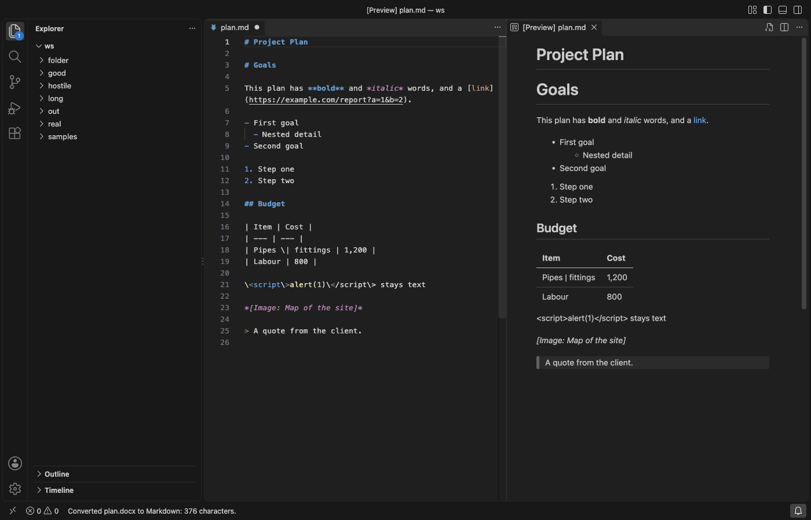

Open files in VS Code and Cursor / Office files
Convert a whole folder of PDF and Word files to Markdown
Converting files one at a time is slow when a folder holds dozens of PDFs and Word files. In Convert to Markdown, the Pro tool Convert a Folder to Markdown converts every supported file in a folder and its subfolders in one run, into a new folder with the same subfolders or next to each file. It ends with _conversion-report.md, which lists each file as converted, skipped or failed. It is part of Zovo Pro (USD 19 once), with 3 free tries on your computer, and converting one file at a time stays free.
Free, MIT license. Extension ID zovo.zovo-convert-to-markdown, version 0.1.1. Needs VS Code 1.90.0 or newer.

Steps in VS Code
- Install Convert to Markdown from the Marketplace, or press Ctrl+P (Cmd+P on macOS) and run
ext install zovo.zovo-convert-to-markdown. - In the Explorer, right-click the folder and pick "Zovo Pro: Convert a Folder to Markdown". You can also run "Convert to Markdown: Convert a Folder to Markdown (Pro)" from the Command Palette and pick the folder.
- Choose where the .md files go. The first choice makes a new folder named
name-markdownnext to the folder, with the same subfolders. You can also put each .md next to its source file, or pick another folder. - If some of the .md files already exist, choose to skip them or to overwrite them.
- Watch the progress. Cancel stops the run, and the files converted so far stay.
- Read
_conversion-report.md, which opens at the end. It lists each file with its result, a link to its Markdown and a note, such as the page count or why a file failed.
Where Zovo Pro saves time
Convert to Markdown and Copy as Markdown are free for one file at a time, with no limit. You can also select up to 20 files in the Explorer, right-click and pick Convert to Markdown, and they are converted one after the other. Set toMarkdown.output to file and each one is saved as a .md file next to its source.
Selecting files works for a few, but a project folder can hold hundreds of documents in subfolders. Convert a Folder to Markdown finds every PDF, Word, PowerPoint, Excel, CSV, HTML, EPUB, ODT and RTF file in the folder and its subfolders and writes one .md file for each. Files in one folder that share a name, such as report.pdf and report.docx, become report.pdf.md and report.docx.md, so none overwrites another. A file that fails is listed in the report, and the run goes on. The other Pro tools save the pictures of a document to an assets folder and split a document into LLM-ready chunks.
With Convert a Folder to Markdown (Zovo Pro)
- Right-click a folder in the Explorer and pick "Zovo Pro: Convert a Folder to Markdown".
- Choose where the files go, then skip or overwrite. Escape at any step uses no try.
- A try counts only when at least one file was converted. A folder with no supported files gives a message and uses no try.
Convert a Folder to Markdown works 3 times on your computer before it asks for a license, and a try counts only when you get a result. Opening a file shows no popup and no countdown.
Zovo Pro costs USD 19 once. It is not a subscription, and it turns on the Pro tools in every Zovo extension, not only Convert to Markdown. After a card payment (Stripe) your license key shows on the next page. In VS Code, run "Zovo Pro: Enter Zovo Pro license key" from the Command Palette and paste it. The key is checked on your computer, with no network call. With GitHub Sponsors, pick the "$19 one time" tier, then run "Zovo Pro: I already paid: unlock with GitHub Sponsors" and sign in with the same GitHub account. With PayPal, send USD 19 with "Zovo Pro" in the note and the key comes by email within a day.
A team of 5: USD 59 once, by card or by PayPal. Every rule and every Pro tool is on the Zovo Pro page.
Steps in Cursor, Windsurf or VSCodium
- Open the Extensions view with Ctrl+Shift+X (Cmd+Shift+X on macOS).
- Search for
zovo.zovo-convert-to-markdownand click Install. Cursor, Windsurf and VSCodium install from Open VSX, where it is published aszovo/zovo-convert-to-markdown. - If your editor has no gallery, download the .vsix from the Open VSX page and run "Extensions: Install from VSIX...".
- Then use it the same way as in VS Code.
What Convert to Markdown handles
- PDF, Word (
.docx,.docm,.dotx,.doc), PowerPoint (.pptx,.pptm,.ppsx,.potx) and Excel (.xlsx,.xlsm,.xlsb,.xls,.ods) files. - CSV, TSV, HTML, EPUB, ODT and RTF files.
- Subfolders, which are kept in the output folder.
- Files with the same name in one folder, which keep their type in the .md name.
- Damaged or password-protected files, which are listed as failed while the rest go on.
What it does not do
- Pictures become placeholders such as
*[Image: Map of the site]*. To save the pictures, use Convert to Markdown with Images on one file. - Hidden folders and folders such as
node_modules,.gitandvenvare skipped, and so are Office lock files whose names start with~$. - Old PowerPoint 97-2003
.pptfiles are not picked up. Save them as .pptx first. - One run finds at most 10,000 files. Each file can be up to 200 MB, and a PDF stops after 1,000 pages (settings
toMarkdown.maxFileSizeMBandtoMarkdown.pdfMaxPages). - Scanned PDFs have no text to convert, and text recognition (OCR) is not included.
Other options
- MarkItDown. A free Python tool from Microsoft that converts PDF, Word, PowerPoint and Excel files to Markdown. It converts one file per command, so a folder needs a shell loop. Needs Python.
- Pandoc. A free converter for Word, ODT, EPUB and HTML files to Markdown. It does not read PDF files, and a folder needs a shell loop.
- Docling. A free Python tool from IBM that converts PDF, DOCX and PPTX files to Markdown, with OCR for scanned pages. Needs Python and downloads its models on first use.
Install counts and Open VSX status were checked on 13 November 2026. Descriptions in quotes are the extensions' own.
Questions
Can I run it again when new files arrive?
Yes. Run it again and pick Skip, and only the files that have no .md yet are converted. Pick Overwrite to convert every file again.
Where does the report go?
The file _conversion-report.md is written into the output folder and opens when the run ends.
Does it upload my files?
No. Every file is converted on your computer, with no network calls.
Does it work in Cursor or Windsurf?
Yes. Cursor, Windsurf and VSCodium install extensions from Open VSX. Search for the extension in their Extensions view and install it there.
More about Convert to Markdown
Read the Convert to Markdown page for every feature and setting, or the source code on GitHub.
Related guides
- Convert a PDF, Word, PowerPoint or Excel file to Markdown in VS Code
- Convert a PDF or Word file to Markdown and keep the images
- Export the speaker notes of a PowerPoint deck as text
- Split a PDF, Word file or deck into Markdown chunks for RAG
Zovo Pro and support
Zovo Pro: USD 19 once, every Zovo viewer. It turns on the Pro tools in this extension and in the other Zovo extensions you use. The free features stay free.
After a card payment your license key shows on the next page. Paste it with the command "Zovo Pro: Enter a key".
You can also support the work with no Pro:
Need your format supported?
Open a format request with a sample file, and I reply there whether it can be done. For USD 299 once, through this GitHub Sponsors tier, I add your file format or a missing feature to this extension, with tests, within 7 days.